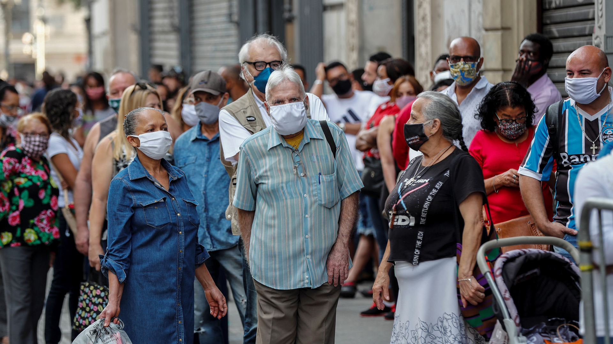
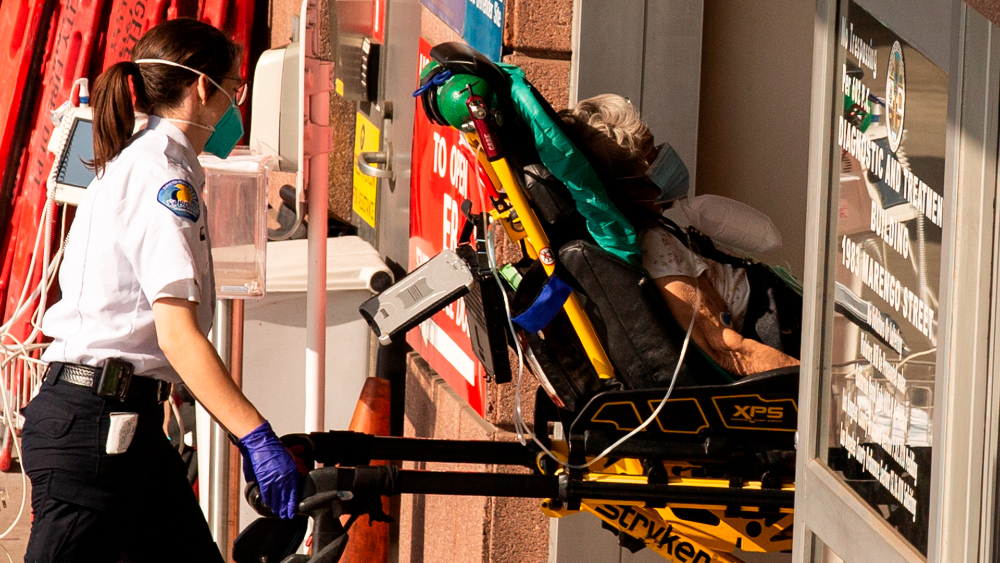
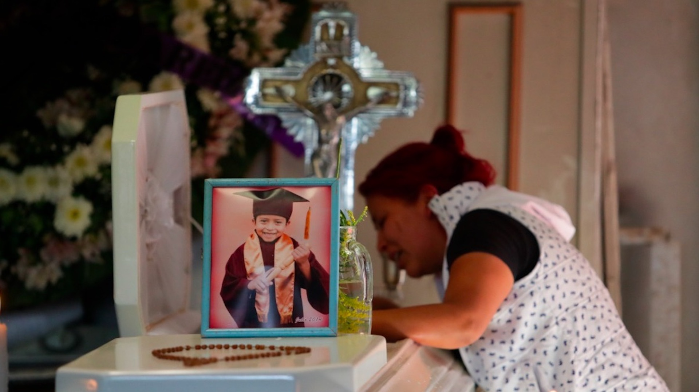
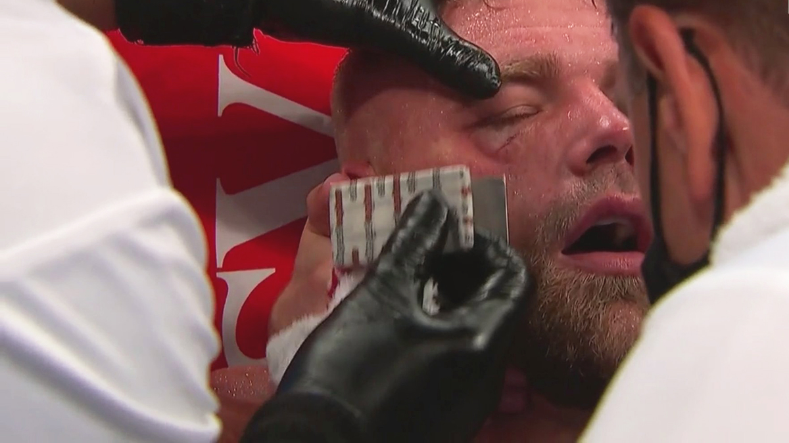
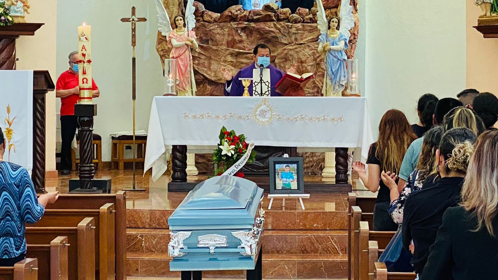

OMS atribuye pandemia de COVID-19 al cambio climático

La directora de Salud Pública de la Organización Mundial de la Salud (OMS), María Neira, aseguró este miércoles que la llegada de una pandemia era 'cuestión de tiempo' porque los 'elementos del cóctel estaban servidos': 'hemos tenido una pésima relación con el Medio Ambiente'.
Neira se expresó de esta manera al cierre de las Jornadas Iberoamericanas sobre Coronavirus y Salud Pública, donde analizó el momento de la pandemia y donde pidió 'dar la batalla' para defender una sanidad pública, de calidad, gratuita y universal para toda la población mundial.
La española apuntó a seis factores claves para salir de la crisis sanitaria en la que el mundo se encuentra en la que el cuidado del medio ambiente atraviesa al resto de manera transversal.
Era cuestión de tiempo porque los elementos del cóctel estaban servidos, hemos tenido una relación pésima con el Medio Ambiente, con los ecosistemas, con las deforestaciones tan agresivas que tienen muchísimo que ver para que se hayan cambiado las condiciones de vida', aseveró.
Neira, contundente en su exposición, ligó de manera clara la llegada de la pandemia a las consecuencias del cambio climático y recordó que las epidemias de las últimas décadas – 'Sida, Ébola o Zika'- procedieron de un 'salto de la salud animal a la salud humana'.
El huésped siempre es el mismo y siempre en condiciones ambientales de estrés, con deforestación y prácticas agrícolas muy intensivas, grandes errores en no preservar la biodiversidad así como la comercialización de especie de animales salvajes sin protección en su traslado, ha contribuido a un aumento de enfermedades infecciosas', apuntó.
La especialista insistió en que nuestra fuente de salud 'es nuestra naturaleza' y 'lo que comemos y bebemos es lo que hemos contaminado'.
Ahora mismo hay millones de toneladas de plásticos en los océanos y hay gente que quizá no le interesa lo ambiental pero ese plástico nos lo estamos comiendo, a la semana nos comemos el equivalente a una tarjeta de crédito, no es una cuestión de activismo', profundizó.
Neira criticó también que los Estados sigan subvencionando a los combustibles fósiles, cuya combustión asoció a '7 millones de muertes prematuras al año' y enfermedades crónicas cuyo tratamiento desbordan los '5 trillones de dólares'.
Es una cuestión de racionalidad, paremos de darles subsidios, 400 mil millones dólares en subsidios a los combustibles fósiles es absolutamente inaceptable, vamos a poner barreras para proteger a la salud, para proteger el medio ambiente y dar acceso a servicios básicos, nos va a hacer menos vulnerables', demandó.
La directora de Salud Pública de la OMS lamentó que aún hoy en 2020 'gran parte de la población mundial' no tenga acceso a recursos básicos como el agua y el jabón, ambos elementos esenciales en la prevención de la infección por COVID-19.
La gente no tiene capacidad de tener jabón, algo que debería estar tan asumido igual que nadie tuviera falta de acceso a servicios tan básicos como el agua y saneamiento.Es una grieta que tenemos tan enorme y que es fundamental si queremos evitar otras pandemias', advirtió.
Por otro lado, apuntó al sistema de producción de alimentos -'tan poco sostenible'- así como a la gestión de los residuos que esta producción genera, una gestión que tildó de 'crítica y estratégica'.
Asimismo, se refirió al estado de las ciudades, -'donde vive el 50 por ciento de la población mundial y en 20 años será el 70'- y aseguró que 'se nos ha olvidado que en ellas hay unas cosas que son los seres humanos'.
Las ciudades están hechas para los coches, no para las personas, vamos a tener que luchar mucho con las autoridades locales para que el transporte público sea sostenible y se evite el uso del coche', dijo al respecto.
En ese sentido, invitó a aprovechar la oportunidad del teletrabajo forzado ahora por la pandemia para que las personas puedan 'vivir en zonas rurales, con casas más grandes y espacios verdes' y evitar que 'todo el mundo se desplace a los centros de las ciudades a la misma hora'.
No parece muy razonable -los desplazamiento masivos a los lugares de trabajo- pero la irracionalidad viene con el ser humano, podemos tener grandísimos resultados o grandísimos errores', adelantó.
Con información de EFE
Posted On: 2020-09-30T00:00:00




Content Date: 2020-09-30
Download Date: 2021-05-13
Document ID: L0C04C7JU